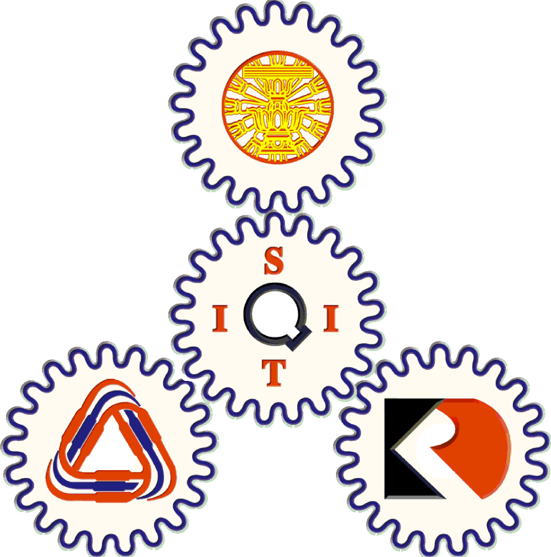

SIIT
Management System
Toggle navigation
1
You 1 Work to do
The broken quip @SIIT
View all
Sona Sona
Sona Sona - Ground Division Member
Member since Nov. 2012
History
Request
Profile
Log Out
Welcome to SIIT Management System & Application
